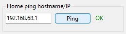
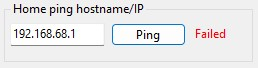

Define your "home" location by configuring a ping test to a home device, such as a printer or Wifi access point. The break of the idle state only happens when the last ping state is OK.


Use 127.0.0.1 when you don't care about security.
The app will reside in the notification area when minized.

You can control the maximum wait interval before the app will break the idle state of Windows with the Break idle after value in seconds.
The last idle break timestamp and counter since the app started can be consulted.
Control for your user only the auto-run behavior of the app with the checkbox.